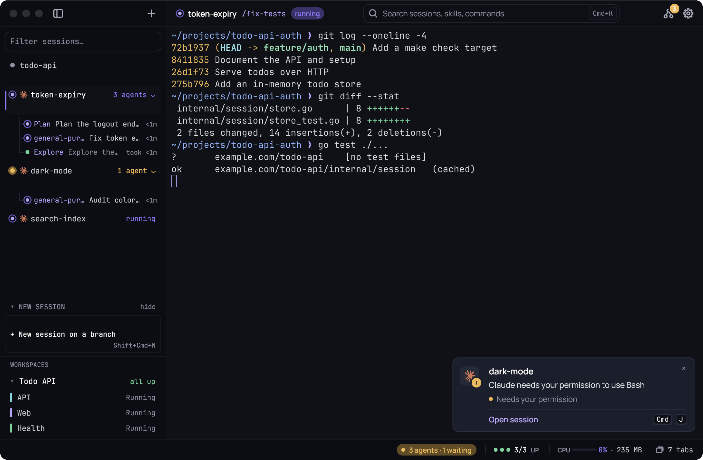

A terminal for running Claude Code and Codex all day. Built for the long session. Keep your sessions in view, see when an agent needs you, and keep your servers one click away.
Run as many agents as you like. Kaze watches them through Claude Code’s and Codex’s own hooks and only asks for your attention when there’s something to answer or read.

Your agents tell Kaze. Kaze tells you.
No polling, no plugins. A line in Claude Code’s settings is all it takes, and Settings adds it for you.
Your agent
The agent speaks up
Claude Code’s hooks call Kaze when it asks for permission, finishes, or starts a subagent.
kaze notify needs
Kaze
You jump straight there
A card names the session and what Claude said. One key opens the newest one.
CtrlShiftJ · ⌘J
You
Everything else is one key
Sessions, servers, your Claude Code skills and slash commands, and Kaze’s own actions.
CtrlShiftK · ⌘K
Built around the agent. Still just a terminal.
Any shell, any program. The parts below only show up when an agent is running.
A sidebar of sessions
Sessions group by repo, worktrees included, with a bold name for the project you’re in. Each row shows the agent, its name and state above the branch and lines changed. See what needs you, what is running and what is done without switching.
Alert cards
When Claude asks or finishes, a card at the bottom right names the session the way the sidebar does, with its branch and slash command, what Claude said or the start of its reply, and how long it ran. ⌘J opens the newest one. Native notifications reach you while Kaze is in the background; click one to open its session. An optional chime too.
When Claude Code or Codex hands work to subagents, each gets a slim line under its session, waiting first. Click one to open it in the panel, which reads like Claude's own transcript: its words first, a short sentence per step, a click for the diff or the output, then a formatted report. Agents started together keep their own names. ⌘⇧A opens the agents board: filter and search every subagent and preview it without leaving the list.
Servers in the panel
Click a workspace member and its terminal opens as a tab in the panel under Claude, next to your subagents. Click the tab to type in it, click Claude’s terminal to take the keyboard back, hide the panel or expand a server to the main view. Nothing floats over your work.
Ctrl+click an .md path, even one with spaces in it, to read it in Kaze with a heading outline and links. It reloads when the agent edits it, and the session is one click away.
Your folder and branch with its line changes, your servers and subagents at a glance, CPU and RAM for your sessions, Claude usage as small meters, and the battery on laptops. Hover for details and when each limit resets.
Ten themes, live font, spacing and cursor controls, and every shortcut in your config. Sessions reopen after a restart with the same folders and agent conversations. Settings checks your Claude Code hooks and adds the missing ones, after showing you the change. ⌘F finds anything in Claude’s scrollback or a server’s log, with every match marked.
Name it. The same folders, the same servers, the same log tail.
Run it from Settings or the palette.
Find it. Each member gets a line in the sidebar and a dot in the status bar. Click one to open it as a tab under your session.
An idle Kaze uses no CPU. It redraws only the cells that changed, caches its glyphs, and the whole app is about 14 MB.
Go and Gio, for macOS and Windows. MIT licensed, small enough to make your own.
What’s new.
Kaze checks for new versions by itself and updates in place from Settings, Updates.
0.37Latest
See which model is running
The model in the status bar: the status bar now shows the model of the session in front, such as Opus 5.5, just before the usage numbers. It follows the tab you’re on and hides when Claude exits. It appears when usage is switched on.
Each subagent’s model: a subagent’s panel shows that agent’s own model after the elapsed time, once its first reply is recorded.
0.36
System notifications and separate Codex tabs
System notifications: while Kaze is in the background, agent alerts also appear as macOS and Windows notifications. The newest alert replaces the older one for that session, and clicking it takes you to the session. Turn it off in Settings, Agents.
Codex tabs stay separate: Codex started in a Kaze tab now runs on its own, so its helpers and alerts stay with the right session. This needs a Codex version with --no-daemon; older versions start as before, without the separation.
Restored workspaces say what’s running: after a restart, workspace tabs whose commands haven’t run say Not started instead of “all up”. Press Run to start them in the tabs already open. Nothing starts by itself.
0.35
A new app icon and logo
A new app icon: Kaze’s icon is now the refreshed wind K in soft lilac on a dark tile, in the Dock, Finder, the Windows taskbar and Alt+Tab. On macOS it follows Apple’s icon shape, so it sits the same size as your other apps. macOS may keep the old icon in the Dock until Kaze restarts after the update.
The same K everywhere: the settings sidebar now shows the new K too, matching the title bar and the About page.
A terminal for macOS and Windows, built for running Claude Code and Codex all day. Underneath it’s a plain terminal: any shell, any program. The sidebar, alert cards, subagent panel and workspaces only come into play when an agent is running.
Which agents does it work with?
Claude Code and Codex, through their own hooks. Settings checks your Claude Code setup and adds what’s missing. Any other tool runs fine as a normal terminal program, just without the alerts.
Is it free?
Yes. Kaze is free and open source under the MIT license. The code is on GitHub.
Why does my computer warn me when I open it?
Kaze isn’t signed by Apple or Microsoft yet, so the first launch asks you to confirm it once. The step-by-step guide shows exactly what to click. Updates don’t ask again.
How does it update?
Kaze checks for new versions by itself. Open Settings, Updates and it replaces itself in place, keeping your config and sessions.
Will it slow my machine down?
It’s built not to. Kaze is about 14 MB, draws on the CPU and redraws only what changed, and runs no timers while idle. It shows its own CPU and RAM in the status bar so you can check.
Let it blow through your day.
Download Kaze for macOS 13 or newer (Apple Silicon and Intel) or Windows 10 and 11. Or build it from source with Go 1.27 or newer.
Kaze isn’t signed by Apple or Microsoft yet, so the first launch asks you to confirm it once.
git clone https://github.com/beefysalad/kaze-terminal.git
cd kaze-terminal
./tools/package-macos.sh # macOS
go build -ldflags "-H=windowsgui" -o kaze.exe ./cmd/kaze # Windows
Opening Kaze the first time.
Your computer asks you to confirm Kaze once. It takes a minute, and you won’t see it again, updates included.
macOS
Download and unzip. Click Download for macOS. Safari unzips it for you; otherwise double-click Kaze-macOS.zip in Downloads.
Drag Kaze into Applications. Open it from there, not from Downloads: macOS runs apps from Downloads in a read-only copy, and Kaze can’t update itself there.
Open it, then click Done. macOS says “Kaze” Not Opened. Apple could not verify “Kaze” is free of malware. Click Done, not Move to Trash.
Allow it in Privacy & Security. Open System Settings › Privacy & Security and scroll down to “Kaze” was blocked to protect your Mac. Click Open Anyway and confirm with your password or Touch ID.
Click Open. Kaze starts, and macOS won’t ask again.